Iris中間表現・通信パケット 初期実験
学習済みIris-3B / V100 32GB / 256×256 / 写真3枚＋図形2枚。空プロンプト、追加学習なし。
検証範囲：特徴抽出と既存の最終ヘッドを使った通信パケットの動作検証です。独立した意味評価は未実施。元画像を使う単一ステップ推定は診断用であり、通信結果に含めません。受信結果は別プロセスでパケットと共有モデルだけから生成しました。
パケット容量と忠実性
| 方式 | 全5枚 平均 bytes | 写真 PSNR | 同予算 JPEG | 同予算 WebP | サムネイルとの差 |
|---|
| full_fp16_none | 1,208,333 | 11.56 | 50.57 | 39.30 | — |
| full_fp16_thumb64 | 1,210,206 | 23.94 | 50.57 | 39.30 | -0.88 dB |
| full_int8_none | 618,859 | 11.56 | 50.57 | 39.30 | — |
| pool2_int4_thumb64 | 15,911 | 23.04 | 34.47 | 36.41 | -1.78 dB |
| pool4_int4_none | 27,976 | 11.48 | 38.05 | 38.63 | — |
| pool4_int4_thumb64 | 29,848 | 23.22 | 38.84 | 38.90 | -1.60 dB |
PSNRは元画像への忠実性だけを測ります。コーデックはパケット以下の容量で最大品質設定を採用。ZIPヘッダー・特徴・量子化スケール・補助JPEG・seed等のメタデータを含む実ファイル容量です。
全サンプルの比較
astronaut
 元画像
元画像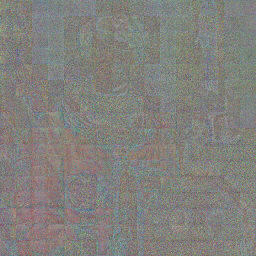
full_fp16_none / 1,199,644 bytes / PSNR 9.82JPEG / 91,053 bytes / PSNR 50.79WEBP / 33,834 bytes / PSNR 37.42元画像full_fp16_thumb64 / 1,202,569 bytes / PSNR 20.78 補助画像のみ / PSNR 21.97
補助画像のみ / PSNR 21.97 JPEG / 91,053 bytes / PSNR 50.79
JPEG / 91,053 bytes / PSNR 50.79 WEBP / 33,834 bytes / PSNR 37.42
WEBP / 33,834 bytes / PSNR 37.42
元画像pool2_int4_thumb64 / 16,762 bytes / PSNR 20.45補助画像のみ / PSNR 21.97JPEG / 16,654 bytes / PSNR 33.29WEBP / 16,042 bytes / PSNR 35.39
元画像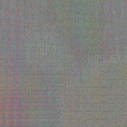
pool4_int4_none / 27,146 bytes / PSNR 9.83JPEG / 26,528 bytes / PSNR 37.21WEBP / 26,112 bytes / PSNR 37.10
元画像pool4_int4_thumb64 / 30,071 bytes / PSNR 20.64 補助画像のみ / PSNR 21.97JPEG / 29,553 bytes / PSNR 38.17WEBP / 28,518 bytes / PSNR 37.26
補助画像のみ / PSNR 21.97JPEG / 29,553 bytes / PSNR 38.17WEBP / 28,518 bytes / PSNR 37.26
chelsea
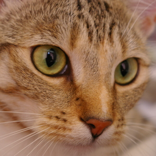
元画像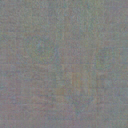
full_fp16_none / 1,191,573 bytes / PSNR 15.02 JPEG / 85,779 bytes / PSNR 50.61
JPEG / 85,779 bytes / PSNR 50.61 WEBP / 34,484 bytes / PSNR 42.59
WEBP / 34,484 bytes / PSNR 42.59元画像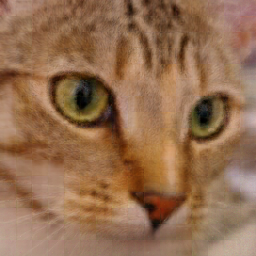
full_fp16_thumb64 / 1,193,675 bytes / PSNR 26.97 補助画像のみ / PSNR 27.71JPEG / 85,779 bytes / PSNR 50.61WEBP / 34,484 bytes / PSNR 42.59
補助画像のみ / PSNR 27.71JPEG / 85,779 bytes / PSNR 50.61WEBP / 34,484 bytes / PSNR 42.59
元画像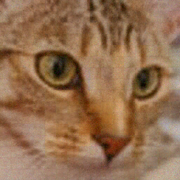
pool2_int4_thumb64 / 15,863 bytes / PSNR 25.94 補助画像のみ / PSNR 27.71JPEG / 15,826 bytes / PSNR 35.94WEBP / 15,278 bytes / PSNR 37.84
補助画像のみ / PSNR 27.71JPEG / 15,826 bytes / PSNR 35.94WEBP / 15,278 bytes / PSNR 37.84
元画像pool4_int4_none / 27,038 bytes / PSNR 14.92JPEG / 26,112 bytes / PSNR 39.32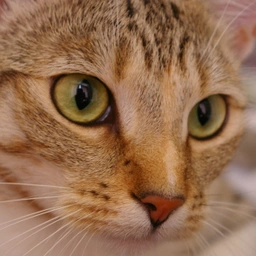
WEBP / 25,858 bytes / PSNR 41.24
元画像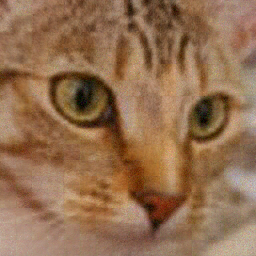
pool4_int4_thumb64 / 29,140 bytes / PSNR 26.09補助画像のみ / PSNR 27.71JPEG / 27,505 bytes / PSNR 39.78WEBP / 28,026 bytes / PSNR 41.76
coffee
元画像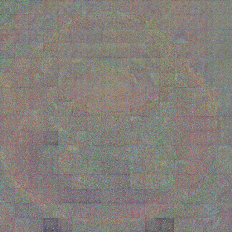
full_fp16_none / 1,200,256 bytes / PSNR 9.84JPEG / 94,522 bytes / PSNR 50.31WEBP / 32,432 bytes / PSNR 37.90
元画像full_fp16_thumb64 / 1,202,875 bytes / PSNR 24.06 補助画像のみ / PSNR 24.77
補助画像のみ / PSNR 24.77 JPEG / 94,522 bytes / PSNR 50.31
JPEG / 94,522 bytes / PSNR 50.31 WEBP / 32,432 bytes / PSNR 37.90
WEBP / 32,432 bytes / PSNR 37.90
元画像pool2_int4_thumb64 / 16,409 bytes / PSNR 22.73補助画像のみ / PSNR 24.77JPEG / 15,917 bytes / PSNR 34.17WEBP / 15,400 bytes / PSNR 36.00
元画像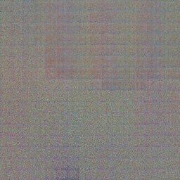
pool4_int4_none / 27,351 bytes / PSNR 9.68JPEG / 26,643 bytes / PSNR 37.61WEBP / 26,796 bytes / PSNR 37.53
元画像pool4_int4_thumb64 / 29,970 bytes / PSNR 22.94 補助画像のみ / PSNR 24.77JPEG / 29,712 bytes / PSNR 38.56WEBP / 28,792 bytes / PSNR 37.69
補助画像のみ / PSNR 24.77JPEG / 29,712 bytes / PSNR 38.56WEBP / 28,792 bytes / PSNR 37.69
red_circle_left
元画像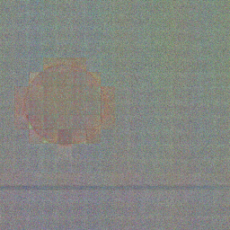
full_fp16_none / 1,225,180 bytes / PSNR 8.16 JPEG / 9,167 bytes / PSNR 50.34
JPEG / 9,167 bytes / PSNR 50.34 WEBP / 2,018 bytes / PSNR 42.01
WEBP / 2,018 bytes / PSNR 42.01
元画像full_fp16_thumb64 / 1,226,085 bytes / PSNR 26.04 補助画像のみ / PSNR 27.05
補助画像のみ / PSNR 27.05 JPEG / 9,167 bytes / PSNR 50.34
JPEG / 9,167 bytes / PSNR 50.34 WEBP / 2,018 bytes / PSNR 42.01
WEBP / 2,018 bytes / PSNR 42.01
元画像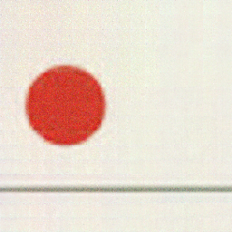
pool2_int4_thumb64 / 15,303 bytes / PSNR 25.09 補助画像のみ / PSNR 27.05JPEG / 9,167 bytes / PSNR 50.34
補助画像のみ / PSNR 27.05JPEG / 9,167 bytes / PSNR 50.34 WEBP / 2,018 bytes / PSNR 42.01
WEBP / 2,018 bytes / PSNR 42.01
元画像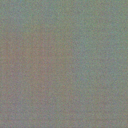
pool4_int4_none / 29,187 bytes / PSNR 7.96 JPEG / 9,167 bytes / PSNR 50.34
JPEG / 9,167 bytes / PSNR 50.34 WEBP / 2,018 bytes / PSNR 42.01
WEBP / 2,018 bytes / PSNR 42.01
元画像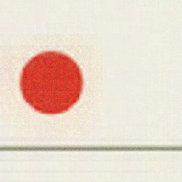
pool4_int4_thumb64 / 30,092 bytes / PSNR 25.18補助画像のみ / PSNR 27.05 JPEG / 9,167 bytes / PSNR 50.34WEBP / 2,018 bytes / PSNR 42.01
JPEG / 9,167 bytes / PSNR 50.34WEBP / 2,018 bytes / PSNR 42.01
実験上の限界と次の判断
- 256pxは初期メモリ検証のための縮小条件。正式な1MP生成品質の評価ではありません。
- 最終トークンのプーリングは学習済みボトルネックではありません。失敗しても中間表現全体の可能性を否定できません。
- 被写体・個数・配置・色の保持は比較画像で観察します。意味的優位性を結論にするには独立評価器と未使用画像が必要です。
- 通常版には公式の特徴条件デコーダがありません。Adapterや明示的に学習したデコーダの必要性を初期結果から判断します。
元の依頼、事前仮説、環境、チェックポイントと画像のSHA-256、失敗記録はプロジェクトに保存しています。